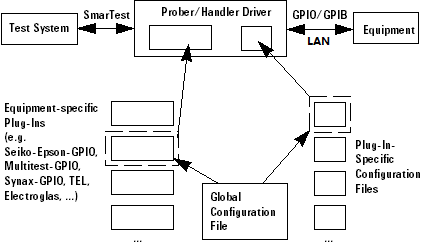

How the prober/handler driver functions
The prober/handler driver comes with the SmarTest software. The driver consists of one prober driver and one handler driver, which both have the same structure.
The figure below shows the equipment driver's components and how it communicates with the test system and the equipment.

Functional changes
- Introduced in SmarTest 7.0.4
- SmarTest 7.2.3: LAN supported